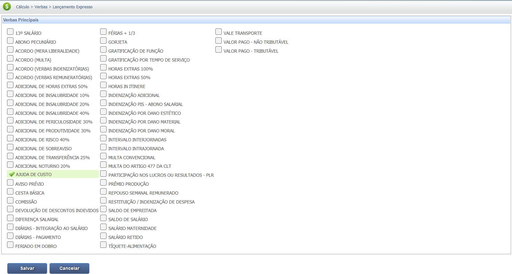
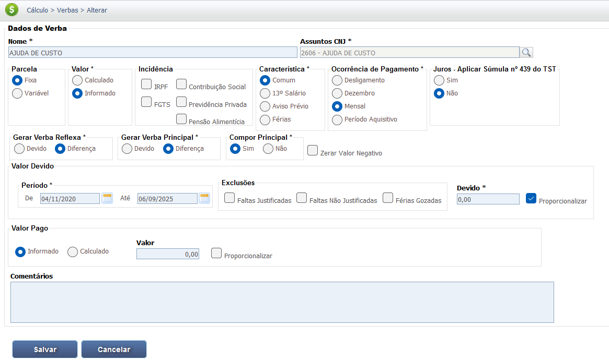
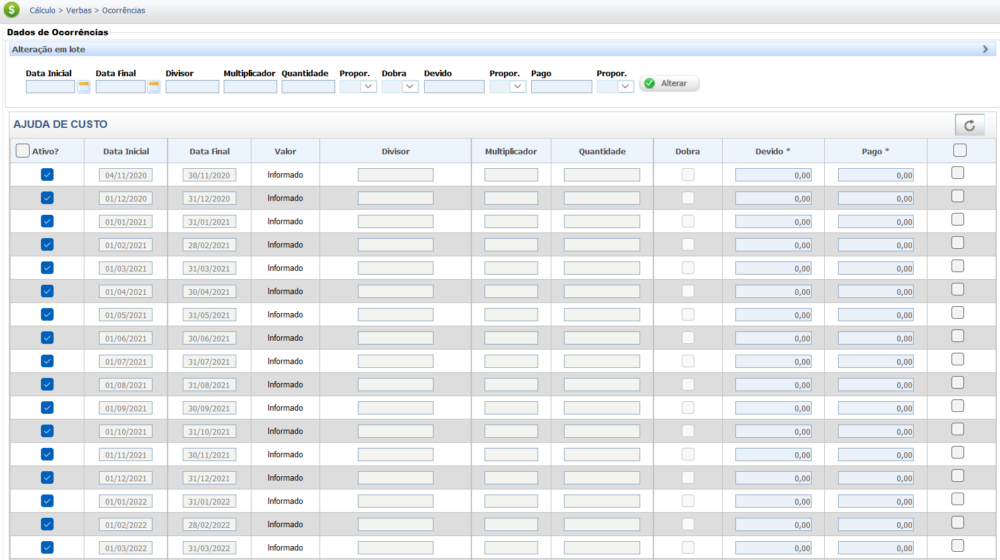

Ajuda de Custo Trabalhista
A ajuda de custo é uma verba paga pelo empregador ao empregado, destinada a ressarcir despesas que o trabalhador teve para a execução do serviço, como mudança ou transferência. É importante diferenciá-la de parcelas salariais, conforme o Art. 457, §2º da CLT.
Características Principais (Ajuda de Custo)
1. Natureza Indenizável (Art. 457, §2º da CLT)
Não integra a remuneração, não gera encargos trabalhistas e não incide em contribuição previdenciária.
- Compensação de Despesas
- Não tem caráter contraprestativo
2. Requisitos para Manutenção da Natureza
O valor deve ser razoável e a finalidade de ressarcimento deve ser clara, evitando o desvirtuamento para salário.
- Razoabilidade do Valor
- Comprovação do Gasto
Aspectos Fundamentais da Ajuda de Custo:
A Ajuda de Custo visa a cobrir despesas e, por isso, difere das demais verbas salariais.
- Finalidade de Custeio: O pagamento deve servir para cobrir custos e não como salário.
- Previsão Legal: É amparado pelo Art. 457, §2º da CLT.
Base Legal e Jurisprudência
A natureza indenizatória da ajuda de custo é definida pela Consolidação das Leis do Trabalho (CLT) e consolidada pela jurisprudência, que busca evitar o desvirtuamento da verba para fins salariais.
Fontes Normativas
Consolidação das Leis do Trabalho (CLT):
- Art. 457, §2º (Natureza Jurídica):
"As importâncias, ainda que habituais, pagas a título de ajuda de custo, auxílio-alimentação, vedado seu pagamento em dinheiro, diárias para viagem, prêmios e abonos não integram a remuneração do empregado, não se incorporam ao contrato de trabalho e não constituem base de incidência de qualquer encargo trabalhista e previdenciário."
Jurisprudência
Desvirtuamento da Ajuda de Custo
Entendimento Consolidado do TST:
"Para manter a natureza indenizatória, o valor pago como ajuda de custo deve ser razoável e comprovadamente destinado ao ressarcimento de despesas do empregado, como mudança ou transferência. O pagamento habitual de valores que excedam o razoável e não tenham comprovação de despesa pode caracterizar fraude, gerando a integração da parcela ao salário para todos os efeitos legais (reflexos em 13º, férias, FGTS, etc.)."
*(Nota: A jurisprudência avalia o binômio 'razoabilidade do valor' vs. 'despesas comprovadas' para definir se a verba tem natureza salarial ou indenizatória).*
Base de Cálculo e Deduções
A Ajuda de Custo em regra possui natureza indenizatória, entretanto, caso haja desvirtuamento, a Ajuda de Custo pode ser considerada parcela salarial por decisão judicial.
Cálculo de Verba Descaracterizada (Exemplo)
Se desvirtuada, a Ajuda de Custo integrará a base de cálculo da Remuneração e terá incidência de FGTS e INSS.
Dedução:
Geralmente, não há deduções previdenciárias ou de IRRF sobre a Ajuda de Custo, a menos que seja judicialmente reconhecida sua natureza salarial.
Verbas Reflexas
A Ajuda de Custo por possuir de regra natureza indenizatória não integra a base de cálculo de nenhuma outra verba.
A condenação de Ajuda de Custo como verba salarial gera reflexos sobre as verbas acessórias devidas ao empregado, retroativamente.Reflexos Comuns (em caso de integração)
1. 13º Salário:
O valor da Ajuda de Custo, se salarial, deve integrar o cálculo do 13º salário.
2. Férias e Terço Constitucional:
A Ajuda de Custo, se salarial, deve compor a base de cálculo para as férias e o adicional de 1/3.
3. FGTS (Fundo de Garantia por Tempo de Serviço):
O empregador deverá recolher o FGTS sobre o valor mensal da Ajuda de Custo declarada salarial.
Calculadora (Simulação)
Esta seção é dedicada à simulação de valores. No caso da Ajuda de Custo, a simulação se aplicaria apenas se houvesse uma condenação por desvirtuamento.
Ferramenta de Simulação para Ajuda de Custo não implementada.
A Ajuda de Custo, por ser indenizatória, não possui tetos ou cálculos proporcionais automáticos como o Dano Moral e Patrimonial, tornando a simulação mais dependente de critérios específicos.
Lançamento no PJe-Calc
A seguir, confira o passo a passo para o lançamento da verba no PJe-Calc, utilizando a opção "Expresso":
-
Acessar Verbas e Escolher Lançamento: No menu de
navegação à esquerda, clique na opção Verbas para iniciar o lançamento. Após o
comando,
será exibida a tela para escolha do Lançamento da Verba. Escolha a opção Expresso.

- Seleção da Verba: O sistema abrirá as opções de verbas, escolha a verba Ajuda de Custo e clique no botão Salvar 
-
Quadro de Verbas e Ações: O sistema exibirá um quadro
com os campos:
- Ações - contendo as opções de configurações da verba selecionada (parâmetros,
ocorrências e
exclusão)

-
- Parâmetros da Verba

-
- Ocorrências da Verba

-
- Excluir

- Verba Principal - verba selecionada para lançamento.
- Verba Reflexa - em que ao clicar no botão Exibir serão listadas todas as verbas reflexas ligadas a Verba Principal.
- Parametrização da Verba: Ao clicar no botão Parâmetros da Verba serão exibidas todas as configurações necessárias para a parametrização da Verba Principal. 
- Registro de Ocorrências: Ao clicar no botão Ocorrências da Verba serão exibidas todas as configurações necessárias para registro das ocorrências da Verba Principal. 